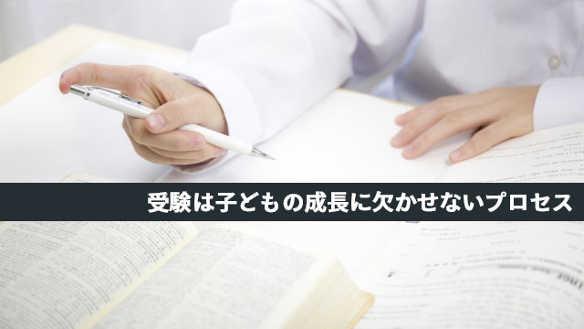

受験生の親になってみてしみじみ思うこと。それは「親として子どもに何もやってあげられないなァ」ということです。
一種の無力感ですね。
世の中には「お父さんが塾の先生だからさぞかし子どもにビシビシ受験指導とかやってるんだろう」と思う人もいるようですがそんなことはありません。
「でも、色々アドバイスとかはしてるんでしょ？」
全然しません。（苦笑）
しないどころか、私に限っていえば我が子の受験校さえ最近知ったぐらいです。
ウチは年子なので昨年も上の息子が高校受験をしましたが、その際も「どこを受けろ」などひとことも言いませんでした。
すべて息子が自分で決めたことです。母親には相談していたようで、一緒にホームページで学校情報を検索したり説明会に行ってたようですが、私には一言も相談はありませんでした。私は何も言いません。
今年も息子はすべて自分で受験校を決めたのです。
ただ、おかしかったのは学校の担任教師が息子に「あなたの志望校、コレお父さんがムリヤリ受けろと言ってるんでしょ！」と決めつけたという話。
息子は「違います。自分で決めました」と再三答えたにもかかわらず、何度も呼び出され「お父さんが受けろと言ってるのでしょ」と詰問したとのこと。
息子は後日「あの先生、頭おかしいよ！」（失礼！）とキレていましたが、担任にしてみたら息子が実力不相応のレベルを受けようとしているのは親が圧力をかけているからだと思いこんだのでしょう。
かけてません。偏見です！ とブログで答えておきましょう（笑）。
子どもに受験のアレコレをアドバイスしないのは、私がむしろ塾講師だからというのも理由の一つです。ただでさえ思春期の難しい年頃なのに「受験指導のプロ」である親がシャシャリ出てきたらどうなるでしょう？
子どもは萎縮し心を閉ざすかも知れません。
だから私は子どもに「勉強しろ」とか「志望校はこうしろ」だとか言ったことはありません。
思春期の男の子にとってオヤジほど煙たい存在はないし、まして勉強を教えるプロに何だかんだとお説教されたら子どもの立場もありません。
それに、これはいつも言うことですが「他人さまの子ども」を指導できても「我が子」の勉強をみることはできないのです。きっと冷静に判断することはできないでしょう。どうしても感情が入ってきます。医者が家族を手術できないのと同じです。
そういうわけで「受験指導のプロ」でありながら我が子の受験に対して何もできず、指をくわえて見ているだけという有り様になるわけです。
「何もできない」からこそチャンス
しかし考えてみれば、この「子どもに何もしてやれない」という状況は後でも述べますが、必ずしも悪いことではないかも知れません。
私だけではなく、多くの親は子どもの受験に対しては無力な存在と化すのではないでしょうか。せいぜい子どもに代わって学校の情報を集めたり、説明会に行き塾の先生に相談したりするくらいで脇役をやるしかない。
主役はあくまでも子ども自身ですからね。
特に受験が始まってしまうと何もできることはない。合格を祈るとか夜食を作るとかくらいしかやることがない。後は心配しながらひたすら終わるのを待つだけ。
中学受験は親が関わる場面が多いし、大学受験は逆に子どもに任せきりで構わない。しかし高校受験は、親が「まだできることはあるはず」と思いながら見守るしかない状況なわけで、これはこれで結構ストレスです。
でも考えようによっては、この高校受験は親子にとって良いチャンスと見ることもできると思います。
結果がどうあれ子どもが成長するチャンスであることは以前にも話したと思いますが、親にとっても「何もしてやれない」という事実が実は子どもを手放すチャンスだと思うからです。
15歳という年齢は昔から元服やら様々な儀式によって、一応大人として扱うという合意があり親元から離す風習がありました。
この時期に親ばなれ子ばなれをするのがふさわしいということが共同体の「知恵」としてあったわけです。
しかし現代はこのような儀式はなく、就学期間も長引くようになったため親も子も互いからの自立が遅れがちになっています。
親はどうしても子どもをいつまでも「子ども扱い」し、子どもも親の庇護を受け続ける心地良さから脱出しにくい時代といえるでしょう。
だから高校受験はその一つのきっかけとしては良い契機です。
親はこの際、自分は何もできないのだということを認め「何もできないこと」にただ無力さを感じたり、さびしさを感じるのではなく何もできないからこそ子どもの自立を促せるのだという逆転の発想をすべきだと思います。
大きな視野で子どもを見守る
それでも「子どものために何かしたい」とか「合否のたびに一喜一憂してしまう」「早く終わらないかとイライラする」という人もいるでしょう。
気持ちはよく分かります。
何といっても子どもの受験は家族にとっても一大事です。心の揺れは仕方ありません。
私も毎日揺れっぱなしです（笑）。
それでも過度の心配、ストレスは良くありません。
特に「子どもが受験で苦しんでいるのに親だけノンビリかまえるわけにはイカン！」というような、過剰な責任意識は必要ないのです。罪悪感もいりません。
先にも言ったように、高校受験は子どもの自立を促す重要な儀式（イニシエイション）ともいうべきものだからです。
むしろ子ども本人は緊張し苦しみながらも、心のどこかでそれを自分のための「良き試練」と受け入れているものです。まるで「今の時期の自分たちにはこの試練が必要だ」と知っているかのように。
高校受験生を何千人も見てきた私が言うのだから確かです。
親の中には「子どもがカワイソウ…」などと言う人もいますが、子どもはそんなにヤワじゃありません。我が子を信じてあげて下さい。
そうです。今こそ我が子を信じるときです。
受験が終わったら一段成長する我が子の姿を楽しみにゆったり構えましょう。
親の不安やイライラは子どもの「やる気」に影を落としてしまいます。
受験も子どもの成長に欠かせないプロセスの一つと考えれば、大きな視点からこの体験を見つめ直すことができます。
受験終了まであと少し。大きな愛で子どもを包み込んでください。